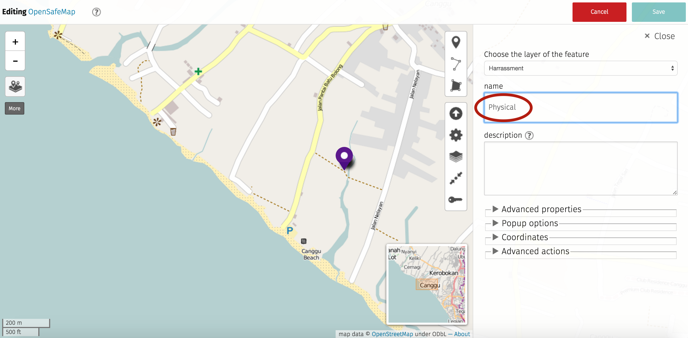
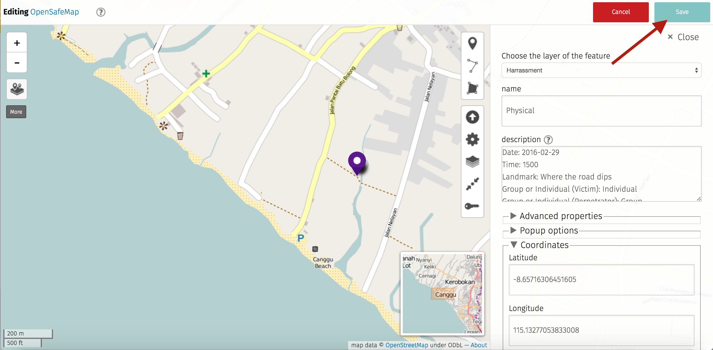

Welcome to OpenSafeMap
ENGThis site is designed to provide guidance on adding points to OpenSafeMap in order to capture and record incidents of harassment. This initiative is inspired by International Women's Day and the high volume of harassment experienced recently by women on the island of Bali. In honour of this day a uMap instance powered by OpenStreetMap has been set up to capture incidents of 'Stalking', 'Verbal' and 'Physical' abuse. Please note that the sole purpose of this tool is to map incidents to visualise where these events are taking place and NOT TO record any identifying details of the victim or perpetrator. OpenSafeMap will be reviewed for the inclusion of other types of incidents such as 'Theft', depending on the tools reception and its effectiveness.
INDSitus ini dirancang untuk memberikan panduan tentang cara menambahkan poin di OpenSafeMap untuk menangkap dan insiden catatan pelecehan. Inisiatif ini terinspirasi oleh International Women's Day dan volume tinggi pelecehan yang dialami baru-baru ini oleh perempuan di pulau Bali. Untuk menghormati hari ini peta uMap didukung oleh OpenStreetMap telah dibentuk untuk menangkap insiden pelecehan ‘Stalking’, ‘Verbal’ dan ‘Physical’. Harap dicatat bahwa satu-satunya tujuan dari alat ini adalah untuk memetakan insiden untuk memvisualisasikan di mana peristiwa ini terjadi dan tidak untuk merekam setiap detail mengidentifikasi korban atau pelaku. OpenSafeMap akan ditinjau untuk penyertaan jenis lain insiden seperti ' Pencurian ', tergantung pada alat penerimaan dan efektivitasnya.
Go to top of pageInternational Women's Day
ENGGlobal recognition of International Women’s Day (IDW) first took place during the labour movement at the dawn of the 20th century and continues to grow exponentially every year. IWD is not just a celebration of the political, economic, and social achievements of women. It is a call to action, a time for reflection, advocacy and education. In 2015 the World Economic Forum estimated that the gender gap will not close for another 117 years so this year’s theme is to Pledge for Parity. Individuals and organizations are making a variety of commitments to accelerate gender parity. One of the key targets of the United Nations “Planet 5050 by 2030: Step it up for Gender Equality” agenda is to eliminate all forms of violence and discrimination against women and girls in the public and private spheres. This is global issue, as according to the U.N., 1 in 3 women will experience physical or sexual violence in their lifetime.
INDPengakuan global International Women’s Day (IDW) pertama berlangsung selama gerakan buruh pada awal abad ke-20 dan terus tumbuh dengan pesat setiap tahun. IWD bukan hanya perayaan prestasi politik , ekonomi , dan sosial perempuan. Ini adalah panggilan untuk bertindak, waktu untuk refleksi, advokasi dan pendidikan. Pada 2015 Forum Ekonomi Dunia memperkirakan bahwa kesenjangan gender tidak akan menutup selama 117 tahun sehingga tema tahun ini adalah untuk Pledge for Parity. Individu dan organisasi membuat berbagai komitmen untuk mempercepat kesetaraan gender. Salah satu target utama dari United Nations “Planet 5050 by 2030: Step it up for Gender Equality” agenda adalah untuk menghilangkan segala bentuk kekerasan dan diskriminasi terhadap perempuan dan anak perempuan di ruang publik dan swasta. Ini adalah isu global, sesuai dengan U.N., 1 dari 3 wanita akan mengalami kekerasan fisik atau seksual dalam hidup mereka.
Go to top of pageEmpower Through Mapping
ENGRecently, there has been a significant increase in cases of harassment in Bali. For many reasons such as language barrier and trauma, incidents are not always reported to authorities or made public information. OpenSafeMap addresses this issue by allowing for individuals to anonymously input a geographical marker and description of an incident of harassment. OpenSafeMap allows for data visualization that can help identify high risk areas. This tool can be used to empower individuals. Confidentiality is of the utmost importance and your personal information will not be collected. By reporting you can help promote the safety and growth of an informed and responsive community.
INDBaru-baru ini, telah terjadi peningkatan yang signifikan dalam kasus pelecehan di Bali. Karena berbagai alasan seperti hambatan bahasa dan trauma, insiden tidak selalu dilaporkan kepada pihak berwenang atau dibuat informasi publik. OpenSafeMap membahas masalah ini dengan memungkinkan bagi individu untuk anonim masukan penanda geografis dan deskripsi insiden pelecehan. OpenSafeMap memungkinkan untuk visualisasi data yang dapat membantu mengidentifikasi daerah berisiko tinggi. Alat ini dapat digunakan untuk memberdayakan individu. Kerahasiaan adalah yang paling penting dan informasi pribadi Anda tidak akan dikumpulkan. Dengan melaporkan Anda dapat membantu mempromosikan keselamatan dan pertumbuhan komunitas informasi dan responsif.
Go to top of pageHow to Map an Incident
1. ENG Zoom in and find where the incident occurred or take a look at step 7 to see how to add the location manually.
1. IND Situs ini dirancang untuk memberikan panduan tentang cara menambahkan poin di OpenSafeMap untuk menangkap dan insiden catatan pelecehan.
2. ENG Select the pencil icon in the top right corner to activate edit mode.
2. IND Pilih ikon pensil di pojok kanan atas untuk mengaktifkan mode edit.
3. ENG Select the place marker icon in the top right corner to place a point on the map.
3. IND Pilih ikon penanda tempat di pojok kanan atas untuk menempatkan titik pada peta.
4. ENG Place the marker on the map where the incident occurred.
4. IND Menempatkan penanda pada peta di mana insiden itu terjadi.

5. ENG The layer of the feature should be 'Harassment'. Please enter the type of incident as either 'Stalking', 'Verbal' or 'Physical' as the name.
5. IND Lapisan fitur harus 'Pelecehan'. Silahkan pilih jenis insiden sebagai 'Stalking', 'Verbal' atau 'Physical' sebagai nama.

6. ENG Please enter ONLY the following details as part of the incidents description:
6. IND Masukkan HANYA rincian sebagai berikut sebagai bagian dari deskripsi insiden:
- Date
- Time
- Landmark
- Individual or Group (Victim)
- Individual or Group (Perpetrator)
- Notes
ENG See below as an example:
IND Lihat dibawah untuk contoh:
- Date: 2016-02-29
- Time: 1500
- Landmark: Jalan Lingkaran Nelayan (Where the road dips)
- Individual or Group (Victim): Individual
- Individual or Group (Perpetrator): Group
- Notes: Two men drove by on a motorbike and the passenger grabbed my breast as they passed by.
7. ENG The location of the incident can be set manually by entering the coordinates which can be captured with a GPS using a mobile device.
7. IND Lokasi kejadian dapat diatur secara manual dengan memasukkan koordinat yang dapat ditangkap dengan GPS menggunakan perangkat mobile.

8. ENG Hit the 'Save' button to add the point to the map and save the details of the incident.
8. IND Tekan tombol 'Simpan' untuk menambahkan titik untuk peta dan menyimpan rincian insiden itu.
9. ENG The message 'Map has been updated!' will appear at the top of the screen to verify that the point has been added.
9. IND Pesan 'Peta telah diperbarui!' akan muncul di bagian atas layar untuk memverifikasi bahwa titik telah ditambahkan.
10. ENG Click on the newly added place marker to view the details of the recorded incident.
10. IND Klik pada tempat penanda baru ditambahkan untuk melihat rincian insiden direkam.
11. ENG Click the 'More' button on the top left corner of the screen to access additional map features.
11. IND Klik tombol 'More' di sudut kiri atas layar untuk mengakses fitur peta tambahan.
12. ENG Select the magnifying glass icon to expand the application options for editing data in OpenStreetMap. This can be used to add roads and buildings for areas that still have to be mapped.
12. IND Pilih ikon kaca pembesar untuk memperluas pilihan aplikasi untuk mengedit data di OpenStreetMap. Ini dapat digunakan untuk menambah jalan dan bangunan untuk daerah yang masih harus dipetakan.
13. ENG Click the 'iD' button to launch the iD Editor which is recommended for beginners. Please follow the guidelines below on how to sign up to OSM.
13. IND Klik tombol 'iD' untuk meluncurkan iD Editor yang direkomendasikan untuk pemula. Silahkan ikuti panduan di bawah ini tentang cara mendaftar untuk OSM.
Go to top of pageSign up to OpenStreetMap
ENGOpenStreetMap (OSM) is a collaborative project that aims to create a free geospatial database of the entire world. It is registered under the ODbL license which means it is open for everyone to access, use, manipulate, contribute to and redistribute in any form. For more information on why OSM is so great and why we should all be using it, check out this article by the Guardian and this blog post by Mapbox.
INDOpenStreetMap (OSM) adalah proyek kolaborasi yang bertujuan untuk membuat database geospasial bebas dari seluruh dunia. Hal ini terdaftar di bawah lisensi ODbL yang berarti terbuka untuk semua orang untuk mengakses, menggunakan, memanipulasi, berkontribusi dan mendistribusikan dalam bentuk apapun. Untuk informasi lebih lanjut tentang mengapa OSM begitu besar dan mengapa kita semua harus menggunakannya, lihat artikel ini dengan Guardian dan posting blog ini dengan Mapbox.
14. ENG 'Login' or 'Register' an account with OpenStreetMap.
14. IND 'Login' atau 'Register' rekening dengan OpenStreetMap.
15. ENG 'Start the Walkthrough' if this is the first time using the application or 'Edit Now' to start mapping.
15. IND 'Start the Walkthrough' jika ini adalah pertama kalinya menggunakan aplikasi atau 'Edit Now' untuk memulai pemetaan.
16. ENG The iD Editor application provides satellite imagery as a base layer which can then be mapped by tracing roads and buildings on top of.
16. IND Aplikasi iD Editor memberikan citra satelit sebagai lapisan dasar yang kemudian dapat dipetakan dengan menelusuri jalan dan bangunan di atas.
Go to top of page